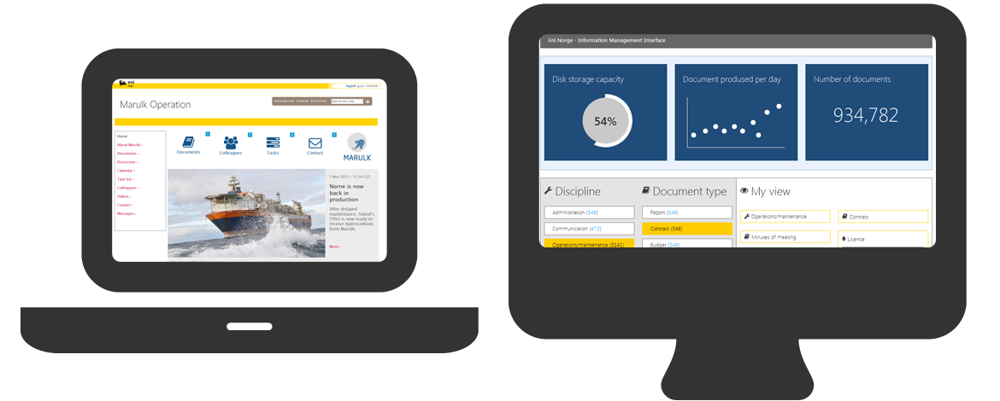

{{> header}}

<div class="article-wrapper">

    <h5 class="case">Case</h5>

    <h1>Eni Norge</h1>

    <h2>Information Management Visualization - creating views of unstructured documents</h2>

    <div class="article-image">
        <div class="article-image-element">
            
              <div class="article-image-overlay">
                <!--  <h2><span class="highlight">Wireframes for the new TV platform</span></h2>-->
              </div>
        </div>
    </div>


    <div class="article-text">

        <p>Traditionally the end user perspective is not the most prioritized focus in Information Management projects.
          This project aimed to go against this trend and create intranet web portals with intelligent and usable views
          of the unstructured documents stored in the information management system eDocs.


        </br></br>The pilot portal generated views of all the unstructured documentation for Marulk Operations -
        a subsea oil and gas field. The pilot successfully staked out the course for many other departments in
        need of more accessible documents.

      </p>

    </div>

</div>


{{> footer}}
